YottaDB is a fork of GT.M. In VistA, everything that says GT.M will work equally well for YottaDB. When running ^ZTMGRSET or ^DINIT, choose GT.M on Unix for YottaDB.
Getting into the Direct Mode (AKA Programmer Mode)
Before there were REPLs, Mumps always has had something called Direct Mode, also known as Programmer Mode, which is a simplified REPL. Normally, end users are not allowed to access Programmer Mode as it is essentially like running as root on a Unix System.
To connect to VISTA and start configuring it, you need a terminal emulator that emulates VT-100, VT-220, VT-320 or VT-52. By default, most terminal emulators do that already, but you cannot use the rxvt terminal emulator.
If you modified your $TERM, you need to make sure it's either xterm or ansi. Others generally will work, but I am sure of these two.
To get into Direct Mode using Cache, on Windows you need to right click on the Cache Cube and choose Terminal. If you have a licensed version of Cache, you can also use Telnet to connect to the Terminal. Please note that Windows Telnet does not emulate VT-200 series terminals properly, so you may have some issues with it. If you want to use Telnet, I recommend downloading PuTTY (http://www.chiark.greenend.org.uk/~sgtatham/putty/) or TeraTerm (https://ttssh2.osdn.jp/index.html.en).
On a Mac, Terminal is a fully featured terminal emulator. You may wish to use System Preferences to configure the function keys to send Function commands, rather than dimming your screen or muting your volume. Otherwise, you have to use FN all the time to override the function keys (https://support.apple.com/en-us/HT204436).
If a VistA system was installed by you or somebody else in the "Cloud", you will almost certainly need to use Secure Shell (SSH) to log in. If you use Telnet, there are some existential questions you have to ask yourself. SSH is a protocol written in the mid-90s to replace Telnet. It's the standard of connecting to other computers on the Cloud. Nobody can see the traffic inside of SSH, whereas Telnet is just plain text. The ssh client comes installed by default in all Unices; on Windows, you can use PuTTY or TeraTerm.
After you open your terminal emulator, do the following:
If your VistA is hosted on a remote server, connect to that first.
On Cache on Linux or Mac, you need to run ccontrol list to find your instance name, and then run csession <instance name>.
On GT.M/YottaDB, you need to source your environment file. If you followed this guide, it should be in /var/db/<name> as env.vista. To source, type . /var/db/<name>/env.vista (The dot is all by itself, followed by a space). Then type mumps -dir to go into direct mode.
You will see something like this:
GTM>
or in Cache:
USER>
If you are in Cache, you need to switch namespaces. (If you don't remember, type ? to see your choices.)
>D ^%CD
NAMESPACE// VISTA
Note to GT.M/YottaDB Users
Due to the fact that Cache does not enforce the M standard as strictly, many illegal instructions have been incorporated into VistA code. In addition, neither Cache nor GT.M/YottaDB is fully M95 standards compliant. As a result, ensuring that new code supports both systems is something of a game. For these reasons, the hardhats community maintains fixes for these routines and, when possible, sends the fixes back to the VA. In the future, the OSEHRA repositories will contain the fixes so that end users don't have to download the code and fix it themselves.
The WorldVistA distribution of VistA is GT.M/YottaDB compatible; you don't need any fixes for it, but the following provides a lot more functionality.
If you downloaded vxVistA or FOIA VistA, you need to copy the routines from this repository to your routines directory: https://github.com/shabiel/Kernel-GTM. Here's how to do it:
The evaluation version of Cache won't let you run more than one foreground process and 20 background processes. You can certainly configure VistA, but don't try to run the RPC broker. A "friend" wasted a lot of my time because he had an evaluation version and couldn't start the RPC broker. You may also need to restart Cache repeatedly, as it sometimes "forgets" that you logged off.
Commands and what they mean (a short M primer)
In the excerpts below, you will enter Mumps (M) commands into direct mode. Here are a few interesting ones:
There are a few confusing conventions that outsiders don't understand right away. Here they are:
// means that the preceding text is the default. If you press enter, you will accept it.
Replace means that the existing text is long and you can edit it. Typing ... means that you will replace the entire thing;
END appends to the end. You can also use ... to signify a range between two elements in the existing text. You can also enter a unique segment of the text, press enter, and at the with prompt put in what you want to replace that bit of text with. If you don't type anything in, it deletes that part of the text.
@ deletes an item.
^ usually lets you quit what you are in the middle of.
^FIELD NAME lets you jump to a field while editing other fields. You may be blocked, depending on what the programmer decided to allow.
? Short Help. Typically it tells you that you need to type a number or text.
?? More Help. Should tell you what the field you are filling does. In the menu system, show all menus with what security keys they need.
??? In the menu system, display help for each immediate submenu.
???? In the menu system, display help for current menu.
<enter> key is the main navigation key in VistA. Typing it after an entry enters that entry; typing when nothing is entered will move you forward or up, depending on the context.
Select <item> Whenever you see select, you can select or add an item; after that, you can edit it.
Spacebar <enter> Most of the time, VistA remembers the last entry you made for a particular field. To make the same entry again, do spacebar enter.
Begin to Set Up the VistA System
Before you Start
You need to either invent or be given a few pieces of data:
What are you going to call your Hospital or Clinic?
What's your station number? If you use VISTA or RPMS deployed by VA, IHS, or an external vendor; they will assign you your station number. Otherwise, pick a number from 130 to 199; or 971 to 999. These numbers are not used by the VA in VistA. In this guide, we will use 999.
What's your domain name? If you have a domain, use it; otherwise, invent one like WWW.HABIEL.NAME.
What's your parent domain? If you are not part of VA or IHS, you can use OSEHRA Forum: FORUM.OSEHRA.ORG.
Are you running on Cache vs GT.M/YottaDB; and what operating system you are running on? If you followed this guide from the very beginning, you would certainly know; but day to day users of VistA have no idea actually what it is running on.
What port number will you have VistA listen on for the RPC Broker? By convention, it's either 9000, 9200, or 9211.
What's the maximum number of processes that you will allow at once on a VistA system? Today (2016), commodity hardware (a good laptop, for example), can handle up to 200 concurrent processes. I usually set my test instances with a maximum of 30 processes, which is the number I use below.
What's your DNS Server? If you don't know, just use 8.8.8.8.
Some of the configuration items below are taken from a system that may have had these entries previously created. If what you see on your screen doesn't exactly match what you see here, you can reply to Fileman with "Y" when adding a new entry; and skip past the fields that are indented by pressing <enter>. What matters in the end is that the final entry matches what is typed here.
ZTMGRSET
The routine ZTMGRSET defines VistA global variables and saves system wide M routines that are M and OS specific. We need to kill ^%ZOSF to make sure we don't have old answers here; and sometimes having ^%ZOSF when you have just switched M implementations causes a catch 22 problem. The text scrape below is for GT.M/YottaDB; the one for Cache follows it.
>K ^%ZOSF
>D ^ZTMGRSET
ZTMGRSET Version 8.0 Patch level **34,36,69,94,121,127,136,191,275,355,446,584**
HELLO! I exist to assist you in correctly initializing the current account.
Which MUMPS system should I install?
1 = VAX DSM(V6), VAX DSM(V7)
2 = MSM-PC/PLUS, MSM for NT or UNIX
3 = Cache (VMS, NT, Linux), OpenM-NT
4 =
5 =
6 =
7 = GT.M (VMS)
8 = GT.M (Unix)
System: 8
I will now rename a group of routines specific to your operating system.
Routine: ZOSVGUX Loaded, Saved as %ZOSV
Routine: ZIS4GTM Loaded, Saved as %ZIS4
Routine: ZISFGTM Loaded, Saved as %ZISF
Routine: ZISHGTM Loaded, Saved as %ZISH
Routine: XUCIGTM Loaded, Saved as %XUCI
Routine: ZOSV2GTM Loaded, Saved as %ZOSV2
Routine: ZISTCPS Loaded, Saved as %ZISTCPS
NAME OF MANAGER'S UCI,VOLUME SET: VAH,ROU//
The value of PRODUCTION will be used in the GETENV api.
PRODUCTION (SIGN-ON) UCI,VOLUME SET: VAH,ROU//
The VOLUME name must match the one in PRODUCTION.
NAME OF VOLUME SET: ROU//
The temp directory for the system: '/tmp/'// <enter>
^%ZOSF setup
Now to load routines common to all systems.
Routine: ZTLOAD Loaded, Saved as %ZTLOAD
Routine: ZTLOAD1 Loaded, Saved as %ZTLOAD1
Routine: ZTLOAD2 Loaded, Saved as %ZTLOAD2
Routine: ZTLOAD3 Loaded, Saved as %ZTLOAD3
...
Routine: ZTRDEL Loaded, Saved as %ZTRDEL
Routine: ZTMOVE Loaded, Saved as %ZTMOVE
Routine: ZTBKC Loaded, Saved as %ZTBKC
Want to rename the Fileman routines: No// Y
Routine: DIDT Loaded, Saved as %DT
Routine: DIDTC Loaded, Saved as %DTC
Routine: DIRCR Loaded, Saved as %RCR
Setting ^%ZIS('C')
Now, I will check your % globals...........
ALL DONE
>
On Caché
On Cache, you will see different prompts.
NAME OF MANAGER'S NAMESPACE: VISTA// <enter>
PRODUCTION (SIGN-ON) NAMESPACE: VISTA// <enter>
NAME OF THIS CONFIGURATION: VISTA// <enter>
Fileman
Initialize Fileman to set your domain name and number and Operating System (GT.M/YottaDB shown below).
>D ^DINIT
VA Fileman V.22.2
Initialize VA Fileman now? NO// Y
SITE NAME: PLA.ISC-WASH.DOMAIN.EXT// DEMO.OSEHRA.ORG
SITE NUMBER: 122000// 999
Now loading MUMPS Operating System File
Do you want to change the MUMPS OPERATING SYSTEM File? NO//....
Now loading DIALOG and LANGUAGE Files.......................................
TYPE OF MUMPS SYSTEM YOU ARE USING: CACHE/OpenM// ?
Answer with MUMPS OPERATING SYSTEM NAME
Choose from:
CACHE/OpenM
DSM for OpenVMS
DTM-PC
GT.M(UNIX)
GT.M(VAX)
MSM
OTHER
TYPE OF MUMPS SYSTEM YOU ARE USING: CACHE/OpenM// GT.M(UNIX)
Now loading other Fileman files--please
wait........................................................................
The following files have been installed:
.11 INDEX
.2 DESTINATION
.31 KEY
...
1.5219 SQLI_FOREIGN_KEY
1.52191 SQLI_ERROR_TEXT
1.52192 SQLI_ERROR_LOG
Re-indexing entries in the DIALOG file..........................
Compiling all forms ...
DICATT (#.001)
DIPTED (#.1001)
DIKC EDIT (#.1101)
...
SPNLP MS FM1 (#45)
SPNE ENTER/EDIT SYNONYM (#46)
LREPI (#47)
File #80 does not contain a field #3.
THE FORM "LREPI" COULD NOT BE COMPILED.
ENPR MS (#48)
ENPR ALL (#49)
ENPR PRELIM (#50)
...
PXRM TAXONOMY EDIT (#125)
PXRM TAXONOMY CHANGE LOG (#126)
PXRM DIALOG TAXONOMY EDIT (#127)
INITIALIZATION COMPLETED IN 4 SECONDS.
>
ZUSET
Also run D ^ZUSET to choose the correct version of ZU, the key login routine for the roll and scroll portions of VistA (GT.M/YottaDB shown).
D ^ZUSET
This routine will rename the correct routine to ZU for you.
Rename ZUGTM to ZU, OK? No// Y
Routine ZUGTM was renamed to ZU
Device Configuration
Next is to set-up 4 devices: NULL, CONSOLE, VIRTUAL, and HFS (historically known as TELNET, due to usual access assignments). The NULL device corresponds to a place where we dump data we don't want; that's /dev/null on all Unices; //./nul on Windows. The NULL device is also known as the "BIT BUCKET", for obvious reasons.
CONSOLE stands for the device the terminal presents itself as if directly connected to a computer. These days, no computer has real console devices. Linux still has an emulated console device: /dev/tty. Cache Terminal presents a console device called |TRM|.
VIRTUAL stands for all connections from Virtual Emulators. Unfortunately every different operating system provides a different console device:
Linux: /dev/pts (Use with both Cache and GT.M/YottaDB)
macOS: /dev/ttys (ditto)
Cygwin: /dev/cons (GT.M [no YottaDB port for Cygwin exists])
Cache Telnet: |TNT| (Cache/Windows ONLY)
The way set up devices is to edit the DEVICE file in Fileman, the Database Management System for VistA. Unlike most databases in the market, it provides a user interface as well, albeit a text-based one. To get into Fileman, you need to set your user (DUZ) to .5, and then go in.
NULL Device
There should only be one device named "NULL". Unfortunately, there are three NULLs of various flavors in the FOIA; we need to make sure there is only one. The following procedure allows you to rename the nulls we don't want, and then delete a synonym.
>S DUZ=.5D Q^DI
VA Fileman 22.2
Select OPTION: 1 ENTER OR EDIT FILE ENTRIES
Input to what File: DEVICE (53 entries)
EDIT WHICH FIELD: ALL// <enter>
Select DEVICE NAME: NULL
1 NULL NT SYSTEM NLA:
2 NULL GTM-UNIX-NULL Bit Bucket (GT.M-Unix) /dev/null
3 NULL-DSM Bit Bucket _NLA0:
CHOOSE 1-3: 1 NULL NT SYSTEM NLA:
NAME: NULL// NT-NULL
LOCATION OF TERMINAL: NT SYSTEM// ^
Select DEVICE NAME: NULL
1 NULL GTM-UNIX-NULL Bit Bucket (GT.M-Unix) /dev/null
2 NULL-DSM Bit Bucket _NLA0:
CHOOSE 1-2: 2 NULL-DSM Bit Bucket _NLA0:
NAME: NULL-DSM// DSM-NULL
LOCATION OF TERMINAL: Bit Bucket// ^
Select DEVICE NAME: NULL GTM-UNIX-NULL Bit Bucket (GT.M-Unix) /dev/null
NAME: GTM-UNIX-NULL// NULL
LOCATION OF TERMINAL: Bit Bucket (GT.M-Unix) Replace <enter>
Select MNEMONIC: NULL// @
SURE YOU WANT TO DELETE? Y (Yes)
Select MNEMONIC: GTM-LINUX-NULL// @
SURE YOU WANT TO DELETE? Y (Yes)
Select MNEMONIC: <enter>
LOCAL SYNONYM: ^
Select DEVICE NAME: <enter>
At this point, we need to make sure that $I (short for $IO) for the device is correct for the system. All Unices have /dev/null; Windows is //./nul.
Select OPTION: ENTER OR EDIT FILE ENTRIES
Input to what File: DEVICE// <enter> (54 entries)
EDIT WHICH FIELD: ALL// $I
Select DEVICE NAME: NULL
$I: /dev/null// //./nul (or leave it alone as it is correct for Unix).
Select DEVICE NAME: <enter>
CONSOLE Device
If you use Cache on Windows or Linux; or GT.M/YottaDB, you should be set theoretically. However, the FOIA set-up is incomplete or overspecified. I would prefer to select an entry and make sure it's properly specified:
You need to fill these fields and no others, as follows:
NAME = CONSOLE
$I = /dev/tty on Linux; on Cache/Windows.
LOCATION OF TERMINAL = Physical Console
TYPE = VIRTUAL TERMINAL
SUBTYPE = C-VT220
SIGN-ON/SYSTEM DEVICE = YES
Here's an example:
Select OPTION: ENTER OR EDIT FILE ENTRIES
Input to what File: DEVICE// <enter> (54 entries)
EDIT WHICH FIELD: ALL// NAME
THEN EDIT FIELD: $I
THEN EDIT FIELD: LOCATION OF TERMINAL
THEN EDIT FIELD: TYPE
1 TYPE
2 TYPE-AHEAD
CHOOSE 1-2: 1 TYPE
THEN EDIT FIELD: SUBTYPE
THEN EDIT FIELD: SIGN-ON/SYSTEM DEVICE
THEN EDIT FIELD: <enter>
STORE THESE FIELDS IN TEMPLATE: <enter>
Select DEVICE NAME: CONSOLE
1 CONSOLE CONSOLE OPA
2 CONSOLE GTM-UNIX-CONSOLE Console (GT.M) /dev/tty
3 CONSOLE CACHE-WINDOWS-CONSOLE Console (Cache' on Windows) |TRM|
CHOOSE 1-3: 2 GTM-UNIX-CONSOLE Console (GT.M) /dev/tty
NAME: GTM-UNIX-CONSOLE// <enter>
$I: /dev/tty// <enter>
LOCATION OF TERMINAL: Console (GT.M)// <enter>
TYPE: VIRTUAL TERMINAL// <enter>
SUBTYPE: C-VT100// C-VT220 Digital Equipment Corporation VT-220 terminal
SIGN-ON/SYSTEM DEVICE: Y YES
VIRTUAL Device
The FOIA only comes with Linux Virtual Terminal. As before, here's what you need to fill it out.
NAME = VIRTUAL TERMINAL
$I = /dev/pts on Linux; /dev/ttys on macOS; /dev/pty0 on Cygwin; on Cache/Windows.
LOCATION OF TERMINAL = Virtual Terminal
TYPE = VIRTUAL TERMINAL
SUBTYPE = C-VT220
SIGN-ON/SYSTEM DEVICE = YES
HFS Device
The HFS device is necessary because KIDS (the installation system used by VISTA) uses it to open files on the operating system. (Technically, it only uses the Open Parameters field.) The one that comes in FOIA looks like this:
NAME: HFS $I: USER$:[TEMP]TMP.DAT
ASK DEVICE: YES ASK PARAMETERS: YES
LOCATION OF TERMINAL: Host File Server
ASK HOST FILE: YES ASK HFS I/O OPERATION: YES
OPEN COUNT: 870 OPEN PARAMETERS: "WNS"
SUBTYPE: P-OTHER TYPE: HOST FILE SERVER
You need to select it and change the settings as follows:
NAME = HFS
$I = /tmp/hfs.dat or /dev/shm/hfs.dat or d:\hfs\, depending on your operating system (All Unices has /tmp/; only Linux has /dev/shm; last one is an example on Windows)
ASK DEVICE = YES
ASK PARAMETERS = @ (Delete it)
LOCATION OF TERMINAL = Host File Server
ASK HOST FILE = YES
ASK HFS I/O OPERATION = @ (Delete it)
OPEN PARAMETERS: "WNS" for Cache, (newversion) for GT.M/YottaDB (note quotes on Cache and their absence on GT.M/YottaDB)
SUBYTPE: P-HFS/80/99999
TYPE: HOST FILE SERVER
Instance Domain, Parent Domain, and Q-PATCH domain
Next, a domain should be set up for the VistA instance. A domain name is typically used to uniquely identify an instance on a network. The parent domain is the domain responsible for routing your traffic to the outside world. The Q-PATCH domain is only necessary for developers wishing to use OSEHRA Forum. First we add the entry to the DOMAIN file through Fileman.
>S DUZ=.5 D Q^DI
VA Fileman 22.0
Select OPTION: 1 ENTER OR EDIT FILE ENTRIES
INPUT TO WHAT FILE: // DOMAIN
(70 entries)
EDIT WHICH FIELD: ALL// ALL
Select DOMAIN NAME: DEMO.OSEHRA.ORG
Are you adding 'DEMO.OSEHRA.ORG' as a new DOMAIN (the 71ST)? No// Y (Yes)
FLAGS: ^
Select DOMAIN NAME: Q-PATCH.OSEHRA.ORG
Are you adding 'Q-PATCH.OSEHRA.ORG' as a new DOMAIN (the 96TH)? No// Y (Yes)
NAME: Q-PATCH.OSEHRA.ORG// <enter>
FLAGS: Q
SECURITY KEY: <enter>
VALIDATION NUMBER: <enter>
NEW VALIDATION NUMBER: <enter>
DISABLE TURN COMMAND: <enter>
RELAY DOMAIN: <enter>
Select TRANSMISSION SCRIPT: MAIN
Are you adding 'MAIN' as a new TRANSMISSION SCRIPT (the 1ST for this DOMAIN)?
No// Y (Yes)
PRIORITY: 1
NUMBER OF ATTEMPTS: 2
TYPE: Simple Simple Mail Transfer Protocol
PHYSICAL LINK / DEVICE: NULL Stored internally as NULL
NETWORK ADDRESS (MAILMAN HOST): FORUM.OSEHRA.ORG
OUT OF SERVICE: <enter>
TEXT:
(on GT.M/YottaDB)
1>O H="FORUM.OSEHRA.ORG",P=TCP/GTM
2>C TCPCHAN-SOCKET25/GTM
3><enter>
(on Cache)
1>O H="FORUM.OSEHRA.ORG",P=TCP/IP-MAILMAN
2>C TCPCHAN-SOCKET25/CACHE/NT
3><enter>
EDIT Option: ^
TRANSMISSION SCRIPT NOTES:
1><enter>
Select TRANSMISSION SCRIPT: ^
Select DOMAIN NAME: FORUM.OSEHRA.ORG
NAME: FORUM.OSEHRA.ORG// <enter>
Are you adding 'FORUM.OSEHRA.ORG' as a new DOMAIN (the 97TH)? No// Y (Yes)
FLAGS: Q
SECURITY KEY: <enter>
VALIDATION NUMBER: <enter>
NEW VALIDATION NUMBER: <enter>
DISABLE TURN COMMAND: <enter>
RELAY DOMAIN: <enter>
Select TRANSMISSION SCRIPT: MAIN
Are you adding 'MAIN' as a new TRANSMISSION SCRIPT (the 1ST for this DOMAIN)?
No// Y (Yes)
PRIORITY: 1
NUMBER OF ATTEMPTS: 2
TYPE: Simple Simple Mail Transfer Protocol
PHYSICAL LINK / DEVICE: NULL Stored internally as NULL
NETWORK ADDRESS (MAILMAN HOST): FORUM.OSEHRA.ORG
OUT OF SERVICE: <enter>
TEXT:
(on GT.M/YottaDB)
1>O H="FORUM.OSEHRA.ORG",P=TCP/GTM
2>C TCPCHAN-SOCKET25/GTM
3><enter>
(on Cache)
1>O H="FORUM.OSEHRA.ORG",P=TCP/IP-MAILMAN
2>C TCPCHAN-SOCKET25/CACHE/NT
3><enter>
EDIT Option: ^
TRANSMISSION SCRIPT NOTES:
1><enter>
Select TRANSMISSION SCRIPT: ^
Select DOMAIN NAME: <enter>
Select OPTION: <enter>
>
The next step is to find the IEN of the instance domain. This can be done by inquiring about the entry using Fileman and printing the Record Number:
>S DUZ=.5 D Q^DI
VA Fileman 22.2
Select OPTION: 5 INQUIRE TO FILE ENTRIES
OUTPUT FROM WHAT FILE: DOMAIN// DOMAIN (71 entries)
Select DOMAIN NAME: DEMO.OSEHRA.ORG
ANOTHER ONE: <enter>
STANDARD CAPTIONED OUTPUT? Yes// Y (Yes)
Include COMPUTED fields: (N/Y/R/B): NO// Record Number (IEN)
NUMBER: 76 NAME: DEMO.OSEHRA.ORG
Select DOMAIN NAME: <enter>
Select OPTION: <enter>
>
Then we propagate that entry to the Kernel System Parameters and RPC Broker Site Parameters files. The value that is being set should be the same as the NUMBER value from the above result.
>F DIK="^XTV(8989.3,","^XWB(8994.1," S DA=1 D IXALL2^DIK,IXALL^DIK
Christening
System is christened using menu option XMCHIRS with FORUM.OSEHRA.ORG as the parent.
>S DUZ=.5 D ^XUP
Setting up programmer environment
This is a TEST account.
Terminal Type set to: C-VT320
Select OPTION NAME: XMCHRIS Christen a domain
Christen a domain
* * * * WARNING * * * *
You are about to change the domain name of this facility
in the Mailman Site Parameters file.
Currently, this facility is named: FOIA.DOMAIN.EXT
You must be extremely sure before you proceed!
Are you sure you want to change the name of this facility? NO// YES
Select DOMAIN NAME: FOIA.DOMAIN.EXT// DEMO.OSEHRA.ORG
The domain name for this facility is now: DEMO.OSEHRA.ORG
PARENT: DOMAIN.EXT// FORUM.OSEHRA.ORG
TIME ZONE: EST// PST PACIFIC STANDARD
FORUM.OSEHRA.ORG has been initialized as your 'parent' domain.
(Forum is usually the parent domain, unless this is a subordinate domain.)
You may edit the Mailman Site Parameter file to change your parent domain.
We will not initialize your transmission scripts.
Use the 'Subroutine editor' option under network management menu to add your
site passwords to the MINIENGINE script, and the 'Edit a script' option
to edit any domain scripts that you choose to.
>
Set-up Taskman
Taskman is the VistA subsystem that is responsible for running processes in the background.
The first step is to find the box volume pair for the local machine.
>D GETENV^%ZOSV W Y
which will print out a message with four parts separated by ^ that could look something like (Cache):
VISTA^VISTA^palaven^VISTA:CACHE
or (GT.M/YottaDB)
VAH^ROU^Macintosh^ROU:Macintosh
The four pieces of the string are:
UCI^VOL^NODE^VOLUME:BOX
The fourth piece, the VOLUME:BOX pair, is referred to as the "BOX VOLUME pair". The first component of the Box Volume pair is the Volume Set, which is used to define the location of routines for the VistA system. The second component, Box, references the system where the instance is found. In a Caché system, it would be the name of the Caché instance; while on GT.M/YottaDB, it should reference the hostname of the machine.
The Volume Set result needs to be altered in the VOLUME SET file, and we will reuse some setup by writing over the name of the first entry that is already in the VistA system. The first entry, the entry with an IEN of 1, can be selected by entering `1.
Then we rename the first Box-Volume pair in the Taskman Site Parameters file to match what was found above.
For this demonstration instance, the Volume Set will be ROU, as per the output above.
>D Q^DI
VA Fileman 22.2
Select OPTION: 1 ENTER OR EDIT FILE ENTRIES
Input to what File: RPC BROKER SITE PARAMETERS// 14.5 VOLUME SET
(1 entry)
EDIT WHICH FIELD: ALL// <enter>
Select VOLUME SET: `1
VOLUME SET: ROU// <enter>
TYPE: GENERAL PURPOSE VOLUME SET// <enter>
INHIBIT LOGONS?: NO// <enter>
LINK ACCESS?: NO// <enter>
OUT OF SERVICE?: NO// <enter>
REQUIRED VOLUME SET?: NO// <enter>
TASKMAN FILES UCI: VAH// <enter>
TASKMAN FILES VOLUME SET: ROU// <enter>
REROUCEMENT VOLUME SET: <enter>
DAYS TO KEEP OLD TASKS: 4// 14
SIGNON/PRODUCTION VOLUME SET: Yes// <enter>
RE-QUEUES BEFORE UN-SCHEDULE: 12// <enter>
Select VOLUME SET: <enter>
The next step sets the Taskman parameters:
Select OPTION: 1 ENTER OR EDIT FILE ENTRIES
Input to what File: UCI ASSOCIATION// 14.7 TASKMAN SITE PARAMETERS
(1 entry)
EDIT WHICH FIELD: ALL// <enter>
Select TASKMAN SITE PARAMETERS BOX-VOLUME PAIR: `1
BOX-VOLUME PAIR: PLA:PLAISCSVR// ? ; Type a ? to see what is the correct value you should enter.
Answer must be 3-30 characters in length.
The value for the current account is ROU:Macintosh
BOX-VOLUME PAIR: PLA:PLAISCSVR// ROU:Macintosh ; Enter that value.
RESERVED: <enter>
LOG TASKS?: NO// @
SURE YOU WANT TO DELETE? y (Yes)
DEFAULT TASK PRIORITY: <enter>
TASK PARTITION SIZE: <enter>
SUBMANAGER RETENTION TIME: 0// <enter>
TASKMAN JOB LIMIT: 100// 24 ; Must be 80% of maximum; in our case that's 30.
TASKMAN HANG BETWEEN NEW JOBS: 1// 0 ; No need to throttle process creation.
MODE OF TASKMAN: GENERAL PROCESSOR// <enter>
VAX ENVIROMENT FOR DCL: <enter>
OUT OF SERVICE: NO// <enter>
MIN SUBMANAGER CNT: 5// 1 ; Change that to 1
TM MASTER: <enter>
Balance Interval: <enter>
LOAD BALANCE ROUTINE: <enter>
Auto Delete Tasks: Y Yes ; Delete Tasks automatically
Manager Startup Delay: 1 ; Don't wait to start the Manager when first starting.
Select TASKMAN SITE PARAMETERS BOX-VOLUME PAIR: <enter>
Kernel Set-Up
We are not done with setting Taskman up yet; but we need to fix the Volume multiple and several other items our in the Kernel System Parameters file first:
AGENCY CODE = EHR (We are not running this inside of the VA)
VOLUME SET:VOLUME SET = ROU
VOLUME SET:MAX SIGNON ALLOWED = 30 (That's the maximum number of processes allowed to run)
INTRO MESSSAGE (word-processing) = Put whatever you want here. This is what users see when they log-on.
PRIMARY HFS DIRECTORY = Default directory where to write things to. Put an appropriate directory for your OS.
>D Q^DI
VA Fileman 22.2
Select OPTION: 1 ENTER OR EDIT FILE ENTRIES
Input to what File: UCI ASSOCIATION// KERNEL SYSTEM PARAMETERS
(1 entry)
EDIT FIELD: AGENCY CODE
THEN EDIT FIELD: VOLUME SET (multiple)
EDIT WHICH VOLUME SET SUB-FIELD: ALL//<enter>
THEN EDIT FIELD: DNS IP
THEN EDIT FIELD: DEFAULT AU
1 DEFAULT AUTO SIGN-ON
2 DEFAULT AUTO-MENU
CHOOSE 1-2: 2 DEFAULT AUTO-MENU
THEN EDIT FIELD: INTRO MESSAGE (word-processing)
THEN EDIT FIELD: PRIMARY HFS DIRECTORY
THEN EDIT FIELD: <enter>
Select KERNEL SYSTEM PARAMETERS DOMAIN NAME: `1 DEMO.OSEHRA.ORG
...OK? Yes// <enter> (Yes)
AGENCY CODE: VA// E EHR
Select VOLUME SET: PLA// @
SURE YOU WANT TO DELETE THE ENTIRE 'PLA' VOLUME SET? Y (Yes)
Select VOLUME SET: ROU
Are you adding 'ROU' as a new VOLUME SET? No// Y (Yes)
MAX SIGNON ALLOWED: 30
LOG SYSTEM RT?:<enter>
Select VOLUME SET:
DNS IP: 127.0.0.1,127.0.0.12 Replace ... With 8.8.8.8
Replace
8.8.8.8
DEFAULT AUTO-MENU: NO// Y YES
INTRO MESSAGE:
1>NEW SYSTEM 304-262-7078
EDIT Option: 1
1>NEW SYSTEM 304-262-7078
Replace ... With This is my test system. Replace
This is my test system.
Edit line: <enter>
EDIT Option: <enter>
PRIMARY HFS DIRECTORY: /tmp/// <enter>
Select KERNEL SYSTEM PARAMETERS DOMAIN NAME:
Back to Taskman
At this point, we are ready to go back to getting Taskman to run. We will now run ^ZTMCHK which checks our work and makes sure we didn't screw up royally.
>D ^ZTMCHK
Checking Task Manager's Environment.
Checking Taskman's globals...
^%ZTSCH is defined!
^%ZTSK is defined!
^%ZTSK(-1) is defined!
^%ZIS(14.5,0) is defined!
^%ZIS(14.6,0) is defined!
^%ZIS(14.7,0) is defined!
Checking the ^%ZOSF nodes required by Taskman...
All ^%ZOSF nodes required by Taskman are defined!
Checking the links to the required volume sets...
There are no volume sets whose links are required!
Checks completed...Taskman's environment is okay!
Press RETURN to continue or '^' to exit:
Here is the information that Taskman is using:
Operating System: GT.M (Unix)
Volume Set: ROU
Cpu-volume Pair: ROU:Macintosh
Taskman Files UCI and Volume Set: VAH,ROU
Log Tasks?
Submanager Retention Time: 0
Min Submanager Count: 1
Taskman Hang Between New Jobs: 0
Taskman running as a type: GENERAL
Logons Inhibited?: N
Taskman Job Limit: 24
Max sign-ons: 30
Current number of active jobs: 1
End of listing. Press RETURN to continue:
If ANY of the fields in the last screen are empty, except "Log Tasks?", you made a mistake. Double check your work.
Next we need to initialize the recurring and start-up tasks that VistA will run. The set of tasks you want your system to run with is very variable; you can see this page for guidance: http://www.vistapedia.com/index.php/Taskman_Recurring_Tasks. We will set these base tasks, which every VistA system ought to have, up on your VistA system:
Start-up Jobs:
XWB LISTENER STARTER (Starts RPC Broker)
XOBV LISTENER STARTUP (Starts VistALink Broker)
XUSER-CLEAR-ALL (Cleans signed on users for a system that just got booted)
XUDEV RES-CLEAR (Clear resource devices for a system that just got booted)
XQBUILDTREEQUE (Rebuild the menus in the menu system)
XQ XUTL $J NODES (IMPORTANT: Delete left over temp globals from process activity)
XUERTRP AUTO CLEAN (Cleans the error trap after 7 days)
XUTM QCLEAN (Clean Task file from completed tasks if the task didn't delete itself after it ran)
Beyond these tasks, which tasks you run depends on what's important to you: if you write notes, you will want TIU tasks; if you use Drug Accountability, you will want PSA tasks; etc.
FOIA VistA comes with a lot of junk, so I advise starting from a clean slate. Be careful with the next few commands: they should never be run on an existing system, otherwise they may delete patient data:
>K ^%ZTSK,^%ZTSCH ; clean taskman Globals
>D DT^DICRW S DIK="^DIC(19.2," F DA=0:0 S DA=$O(^DIC(19.2,DA)) Q:'DA D ^DIK ; Delete all tasks
Next add the tasks outlined above to OPTION SCHEDULING (#19.2). The startup entries will only need the NAME and SPECIAL QUEUING fields; the nightly jobs will need NAME, QUEUED TO RUN AT WHAT TIME, and RESCHEDULING FREQUENCY fields.
>S DUZ=.5 D Q^DI
Select OPTION: ENTER OR EDIT FILE ENTRIES
Input to what File: KERNEL SYSTEM PARAMETERS// OPTION SCHEDULING (0 entries)
EDIT WHICH FIELD: ALL// .01 NAME
THEN EDIT FIELD: 2 QUEUED TO RUN AT WHAT TIME
THEN EDIT FIELD: 6 RESCHEDULING FREQUENCY
THEN EDIT FIELD: 9 SPECIAL QUEUEING
THEN EDIT FIELD: <enter>
Select OPTION SCHEDULING NAME: XWB LISTENER STARTER Start All RPC Broker Listeners
Are you adding 'XWB LISTENER STARTER' as
a new OPTION SCHEDULING (the 1ST)? No// Y (Yes)
QUEUED TO RUN AT WHAT TIME: <enter>
RESCHEDULING FREQUENCY: <enter>
SPECIAL QUEUEING: S STARTUP
Select OPTION SCHEDULING NAME: XOBV LISTENER STARTUP Start VistaLink Listener Configuration
Are you adding 'XOBV LISTENER STARTUP' as
a new OPTION SCHEDULING (the 2ND)? No// Y (Yes)
QUEUED TO RUN AT WHAT TIME: <enter>
RESCHEDULING FREQUENCY: <enter>
SPECIAL QUEUEING: S STARTUP
Select OPTION SCHEDULING NAME: XUSER-CLEAR-ALL Clear all users at startup
Are you adding 'XUSER-CLEAR-ALL' as
a new OPTION SCHEDULING (the 3RD)? No// Y (Yes)
QUEUED TO RUN AT WHAT TIME: <enter>
RESCHEDULING FREQUENCY: <enter>
SPECIAL QUEUEING: S STARTUP
Select OPTION SCHEDULING NAME: XUDEV RES-CLEAR
Are you adding 'XUDEV RES-CLEAR' as
a new OPTION SCHEDULING (the 4TH)? No// Y (Yes)
QUEUED TO RUN AT WHAT TIME: <enter>
RESCHEDULING FREQUENCY: <enter>
SPECIAL QUEUEING: S STARTUP
Select OPTION SCHEDULING NAME: XMMGR-START-BACKGROUND-FILER START background filer
Are you adding 'XMMGR-START-BACKGROUND-FILER' as
a new OPTION SCHEDULING (the 5TH)? No// Y (Yes)
QUEUED TO RUN AT WHAT TIME: <enter>
RESCHEDULING FREQUENCY: <enter>
SPECIAL QUEUEING: S STARTUP
Select OPTION SCHEDULING NAME: XMAUTOPURGE
Are you adding 'XMAUTOPURGE' as
a new OPTION SCHEDULING (the 6TH)? No// Y (Yes)
QUEUED TO RUN AT WHAT TIME: T+1@0001 (DEC 01, 2016@00:01)
RESCHEDULING FREQUENCY: 1D
SPECIAL QUEUEING: <enter>
Select OPTION SCHEDULING NAME: XMCLEAN Clean out waste baskets
Are you adding 'XMCLEAN' as a new OPTION SCHEDULING (the 7TH)? No// Y (Yes)
QUEUED TO RUN AT WHAT TIME: T+1@0005 (DEC 01, 2016@00:05)
RESCHEDULING FREQUENCY: 1D
SPECIAL QUEUEING: <enter>
Select OPTION SCHEDULING NAME: XMMGR-PURGE-AI-XREF AI x-Ref Purge of Received Network Messages
Are you adding 'XMMGR-PURGE-AI-XREF' as
a new OPTION SCHEDULING (the 8TH)? No// Y (Yes)
QUEUED TO RUN AT WHAT TIME: T+1@0010 (DEC 01, 2016@00:10)
RESCHEDULING FREQUENCY: 1D
SPECIAL QUEUEING: <enter>
Select OPTION SCHEDULING NAME: XQBUILDTREEQUE Non-interactive Build Primary Menu Trees
Are you adding 'XQBUILDTREEQUE' as a new OPTION SCHEDULING (the 9TH)? No// Y
(Yes)
QUEUED TO RUN AT WHAT TIME: T+1@0015 (DEC 01, 2016@00:15)
RESCHEDULING FREQUENCY: 1D
SPECIAL QUEUEING: <enter>
Select OPTION SCHEDULING NAME: XQ XUTL $J NODES Clean old Job Nodes in XUTL
Are you adding 'XQ XUTL $J NODES' as
a new OPTION SCHEDULING (the 10TH)? No// Y (Yes)
QUEUED TO RUN AT WHAT TIME: T+1@0020 (DEC 01, 2016@00:20)
RESCHEDULING FREQUENCY: 1D
SPECIAL QUEUEING: <enter>
Select OPTION SCHEDULING NAME: XUERTRP AUTO CLEAN Error trap Auto clean
Are you adding 'XUERTRP AUTO CLEAN' as
a new OPTION SCHEDULING (the 11TH)? No// Y (Yes)
QUEUED TO RUN AT WHAT TIME: T+1@0025 (DEC 01, 2016@00:25)
RESCHEDULING FREQUENCY: 1D
SPECIAL QUEUEING: <enter>
Select OPTION SCHEDULING NAME: XUTM QCLEAN Queuable Task Log Cleanup
Are you adding 'XUTM QCLEAN' as a new OPTION SCHEDULING (the 12TH)? No// Y
(Yes)
QUEUED TO RUN AT WHAT TIME: T+1@0030 (DEC 01, 2016@00:30)
RESCHEDULING FREQUENCY: 1D
SPECIAL QUEUEING: <enter>
There are actually just two more steps:
Run DO ^ZTMB to start Taskman. NOTE THAT IS THIS THE ONLY WAY TO START TASKMAN! Restarting Taskman means that data control structure from the old system will be assumed to be correct. Don't do it!
Run DO ^ZTMON to confirm that everything is running.
You should see this (press enter several times to update the screen, it should take at least 1 second to start); to exit, type ^.
>D ^ZTMB,^ZTMON
Checking Taskman. Current $H=64252,53277 (Nov 30, 2016@14:47:57)
RUN NODE=64252,53274 (Nov 30, 2016@14:47:54)
Taskman is current..
Checking the Status List:
Node weight status time $J
ROU:Macintosh RUN T@14:47:54 81569 Main Loop
Checking the Schedule List:
Taskman has 3 tasks scheduled.
None of them are overdue.
Checking the IO Lists: Last TM scan: 2 sec,
There are no tasks waiting for devices.
Checking the Job List:
There are no tasks waiting for partitions.
Checking the Task List:
There are no tasks currently running.
Checking Sub-Managers:
On node ROU:Macintosh there is 1 free Sub-Manager(s). Status: Run
On CACHE, you can run D THIS^%SS to find out what started; on GT.M/YottaDB, you should have a ZSY which does the same thing. If ZSY isn't present on your instance, you can do something similar to the following until you find a ZSY:
VistA has a very complex structure to deal with the question of: in what hospital are you signed in right now? The answer determines the value of the all important variable DUZ(2) and the API SITE^VASITE().
There are five files that are important in that regard: INSTITUTION (#4), STATION NUMBER (TIME SENSITIVE) (#389.9), KERNEL SYSTEM PARAMETERS (#8989.3), MEDICAL CENTER DIVISION file (#40.8), and MASTER PATIENT INDEX (LOCAL NUMBERS) (984.1). We will add our Hospital to the INSTITUTION file first, with the station number 999. Then we will make sure that the STATION NUMBER file says 999; and then will will point the KERNEL SYSTEM PARAMETERS and MEDICAL CENTER DIVISION to our new Hospital. In MASTER PATIENT INDEX, we tell it our station number and the range of numbers for our Integration Control Numbers (ICNs), the number used to identify patients across systems.
By default, FOIA VistA comes with station number 050, and the institution is called SOFTWARE SERVICE. We can't leave that alone because VistA malfunctions with station numbers are are just 2 digits long (050 becomes 50 in code).
The INSITUTION file is protected from editing by requiring the variable XUMF to be defined. That tells us that inside of the VA, the file is updated by something called Standard Terminology Services (STS), which works by sending VistA mail messages of what to update, and VistA creates the entry based on that mail message. Normally when you see that, you should stay the hell out of the file: it's standardized and should not be tampered with. However, people outside of the VA have no other way to run VistA without updating this file.
We enter Fileman after setting the XUMF variable. Note that in the US, we are supposed to fill the NPI variable, and Fileman won't let me go further without filling it; but I was able to jump forward to avoid answering it. Also, note that we have to fill the STATION NUMBER entry twice, once in the field named so, and another time in the coding system multiple.
>S DUZ=.5,XUMF=1 D Q^DI
VA Fileman 22.2
Select OPTION: ENTER OR EDIT FILE ENTRIES
Input to what File: OPTION SCHEDULING// 4 INSTITUTION
(2535 entries)
EDIT WHICH FIELD: ALL// NAME
THEN EDIT FIELD: STATE
1 STATE
2 STATE (MAILING)
CHOOSE 1-2: 1 STATE
THEN EDIT FIELD: SHORT NAME
THEN EDIT FIELD: .06 VA TYPE CODE
THEN EDIT FIELD: 1.01 STREET ADDR. 1
THEN EDIT FIELD: 1.02 STREET ADDR. 2
THEN EDIT FIELD: 1.03 CITY
THEN EDIT FIELD: 1.04 ZIP
THEN EDIT FIELD: 5 MULTI-DIVISION FACILITY
THEN EDIT FIELD: 11 STATUS
THEN EDIT FIELD: 41.99 NPI
THEN EDIT FIELD: 52 FACILITY DEA NUMBER
THEN EDIT FIELD: 52.1 FACILITY DEA EXPIRATION DATE
THEN EDIT FIELD: 60 DOMAIN
THEN EDIT FIELD: 95 AGENCY CODE
THEN EDIT FIELD: 99 STATION NUMBER
THEN EDIT FIELD: 9999 IDENTIFIER (multiple)
EDIT WHICH IDENTIFIER SUB-FIELD: ALL// <enter>
Select INSTITUTION NAME: PALM DESERT HOSPITAL
Are you adding 'PALM DESERT HOSPITAL' as a new INSTITUTION (the 2536TH)? No// Y
(Yes)
STATE: CA
1 CALIFORNIA
2 CANADA
CHOOSE 1-2: 1 CALIFORNIA
SHORT NAME: PDH??
ANSWER MUST BE 4-80 CHARACTERS IN LENGTH
SHORT NAME: PALDH
VA TYPE CODE: MC HOSP
STREET ADDR. 1: 111 ANY LANE
STREET ADDR. 2: <enter>
CITY: PALM DESERT
ZIP: 92211
MULTI-DIVISION FACILITY: N NO
STATUS: N National
NPI: <enter>??
Answer must be 10 characters in length and not being used.
NPI: <enter>?
Answer must be 10 characters in length and not being used.
NPI: ^FACIL
1 FACILITY DEA EXPIRATION DATE
2 FACILITY DEA NUMBER
3 FACILITY TYPE
CHOOSE 1-3: 2 FACILITY DEA NUMBER
FACILITY DEA NUMBER: <enter>
FACILITY DEA EXPIRATION DATE: <enter>
DOMAIN: DEMO.OSEHRA.ORG
AGENCY CODE: E EHR
STATION NUMBER: 999
Select CODING SYSTEM: VASTANUM
CODING SYSTEM ID: 999
ID: 999// <enter>
EFFECTIVE DATE/TIME: N (DEC 03, 2016)
STATUS: ?
Choose from:
1 ACTIVE
0 INACTIVE
STATUS: 1 ACTIVE
Select INSTITUTION NAME: <enter>
Next, we will tackle the STATION NUMBER file. We technically can create an new entry, but I would just rather reuse the existing entry, which I do by typing `1.
Select OPTION: ENTER OR EDIT FILE ENTRIES
Input to what File: INSTITUTION// STATION NUMBER (TIME SENSITIVE)
(1 entry)
EDIT WHICH FIELD: ALL// <enter>
Select STATION NUMBER (TIME SENSITIVE) REFERENCE NUMBER: ?
Answer with STATION NUMBER (TIME SENSITIVE), or REFERENCE NUMBER, or
EFFECTIVE DATE, or MEDICAL CENTER DIVISION:
50 01-01-82 DBA 050
You may enter a new STATION NUMBER (TIME SENSITIVE), if you wish
Type a Number between 1 and 9999, 0 Decimal Digits
Select STATION NUMBER (TIME SENSITIVE) REFERENCE NUMBER: `1 50 01-01-82
DBA 050
REFERENCE NUMBER: 50// 999
EFFECTIVE DATE: JAN 1,1982// <enter>
MEDICAL CENTER DIVISION: DBA// ?
Answer with MEDICAL CENTER DIVISION NUM, or NAME, or FACILITY NUMBER, or
TREATING SPECIALTY:
1 DBA 050
MEDICAL CENTER DIVISION: DBA// <enter>
STATION NUMBER: 050// 999
IS PRIMARY DIVISION: YES// <enter>
INACTIVE: <enter>
OTHER INSTITUTION: <enter>
INTEGRATION NAME: <enter>
Select STATION NUMBER (TIME SENSITIVE) REFERENCE NUMBER: <enter>
Next, the KERNEL SYSTEM PARAMETERS file:
Select OPTION: ENTER OR EDIT FILE ENTRIES
Input to what File: STATION NUMBER (TIME SENSITIVE)// KERNEL SYSTEM PARAMETERS
(1 entry)
EDIT WHICH FIELD: ALL// DEFAULT INSTITUTION
THEN EDIT FIELD: <enter>
Select KERNEL SYSTEM PARAMETERS DOMAIN NAME: `1 DEMO.OSEHRA.ORG
DEFAULT INSTITUTION: SOFTWARE SERVICE// PALM DES
1 PALM DESERT CBOC CA CBOC 605GC
2 PALM DESERT HOSPITAL CA 999
CHOOSE 1-2: 2 PALM DESERT HOSPITAL CA 999
Select KERNEL SYSTEM PARAMETERS DOMAIN NAME: <enter>
Next, the MEDICAL CENTER DIVISION file:
Select OPTION: ENTER OR EDIT FILE ENTRIES
Input to what File: KERNEL SYSTEM PARAMETERS// MEDICAL CENTER DIVISION
(1 entry)
EDIT WHICH FIELD: ALL// .01 NAME
THEN EDIT FIELD: .07 INSTITUTION FILE POINTER
THEN EDIT FIELD: 1 FACILITY NUMBER
Select MEDICAL CENTER DIVISION NAME: `1 DBA 050
NAME: DBA// MAIN CAMPUS
INSTITUTION FILE POINTER: SOFTWARE SERVICE// PALM DESERT HOSPITAL CA 999
FACILITY NUMBER: 050// 999
Select MEDICAL CENTER DIVISION NAME:<enter>
Next, the MASTER PATIENT INDEX file:
Select OPTION: ENTER OR EDIT FILE ENTRIES
INPUT TO WHAT FILE: MASTER PATIENT INDEX (LOCAL NUMBERS)// MASTER PATIENT INDEX
EDIT WHICH FIELD: ALL//
Select MASTER PATIENT INDEX (LOCAL NUMBERS) SITE ID NUMBER: `1 740
SITE ID NUMBER: 740// 999
LAST NUMBER USED: 500000000// 9990000000
CHECK SUM FOR LAST NUMBER USED: 217407// @
SURE YOU WANT TO DELETE? Y (Yes)
NEXT NUMBER TO USE: 500000001// 9990000001
CHECK SUM FOR NEXT: 075322// @
SURE YOU WANT TO DELETE? Y (Yes)
Select MASTER PATIENT INDEX (LOCAL NUMBERS) SITE ID NUMBER:<enter>
At this point, we are ready to check our work. First, we need to know the internal entry number (IEN) of the institution we just created:
Select OPTION: INQUIRE TO FILE ENTRIES
Output from what File: MEDICAL CENTER DIVISION// 4 INSTITUTION
(2536 entries)
Select INSTITUTION NAME: <spacebar><enter> PALM DESERT HOSPITAL CA 999
Another one: <enter>
Standard Captioned Output? Yes// N (No)
First Print FIELD: NUMBER
Then Print FIELD: <enter>
Heading (S/C): INSTITUTION List// <enter>
INSTITUTION List DEC 03, 2016@20:33 PAGE 1
NUMBER
--------------------------------------------------------------------------------
2957
Okay, let's kill our symbol table (the table that keeps our current variables), log-in, and then run $$SITE^VASITE.
>K S DUZ=.5 D ^XUP
Setting up programmer environment
This is a TEST account.
Terminal Type set to: C-VT100
Select OPTION NAME: <enter>
>W DUZ(2)
2957
>W $$SITE^VASITE()
2957^PALM DESERT HOSPITAL^999
As you can see, our DUZ(2) matches our site number, and $$SITE^VASITE() gives us the correct site number and station number.
Setup RPC Broker
Next, we set-up a port for CPRS to connect. CPRS connects to the Remote Procedure Calls Broker, and it connects using Remote Procedures. The next step is to edit entries in the RPC Broker Site Parameters file. The RPC Broker steps will set up information that references both the Port that the listener will listen on and the Box Volume pair of the instance.
>S DUZ=.5 D Q^DI
VA Fileman 22.0
Select OPTION: 1 ENTER OR EDIT FILE ENTRIES
INPUT TO WHAT FILE: VOLUME SET// 8994.1 RPC BROKER SITE PARAMETERS
(1 entry)
EDIT WHICH FIELD: ALL// LISTENER (multiple)
EDIT WHICH LISTENER SUB-FIELD: ALL// <enter>
THEN EDIT FIELD: <enter>
Select RPC BROKER SITE PARAMETERS DOMAIN NAME: DEMO.OSEHRA.ORG
...OK? Yes// Y (Yes)
Select BOX-VOLUME PAIR: VISTA:CACHE// <enter>
BOX-VOLUME PAIR: VISTA:CACHE//
Select PORT: 9000
Are you adding '9000' as a new PORT (the 1ST for this LISTENER)? No// Y (Yes)
TYPE OF LISTENER: 1 New Style
STATUS: STOPPED//
CONTROLLED BY LISTENER STARTER: Y YES
Select RPC BROKER SITE PARAMETERS DOMAIN NAME: <enter>
Now, start the listener:
>D ^XUP
Setting up programmer environment
This is a TEST account.
Terminal Type set to: C-VT100
Select OPTION NAME: XWB LISTEN
1 XWB LISTENER EDIT RPC Listener Edit
2 XWB LISTENER STARTER Start All RPC Broker Listeners
3 XWB LISTENER STOP ALL Stop All RPC Broker Listeners
CHOOSE 1-3: 2 XWB LISTENER STARTER Start All RPC Broker Listeners
Start All RPC Broker Listeners
Task: RPC Broker Listener START on VAH-ROU:Macintosh, port 9000
has been queued as task 32372
Finally, we need to check that the broker started. While you may use ^%SS or ^ZSY to find that out, I prefer OS level tools that show me that the port is active.
On Mac or Linux, you can run lsof -iTCP -sTCP:LISTEN -P; on Linux, netstat -tnlp; on Windows (including Cygwin), netstat -aon | find /i "listening". Here's an example output on a Mac:
$ lsof -iTCP -sTCP:LISTEN -P
COMMAND PID USER FD TYPE DEVICE SIZE/OFF NODE NAME
mumps 85939 sam 6u IPv6 0x5ee953ac0e7fceab 0t0 TCP \*:9000 (LISTEN)
If you shut down your system and then bring it back up, starting Taskman using ^ZTMB will start your broker, as we set it up as one of the startup tasks.
Back to business: To check that the RPC Broker is REALLY working, run DO ^XWBTCPMT.
>D ^XWBTCPMT
Interactive Broker Test
IP ADDRESS: 127.0.0.1
PORT: 9000
Success, response: accept
To stop the broker, do ^XUP, and then choose XWB LISTENER STOP ALL:
>D ^XUP
Setting up programmer environment
This is a TEST account.
Terminal Type set to: C-VT100
Select OPTION NAME: XWB LISTENER STOP ALL Stop All RPC Broker Listeners
Stop All RPC Broker Listeners
If you run lsof -iTCP -sTCP:LISTEN -P again, you won't see any output.
Independent of our set-up above, we can start the broker at any port we want from direct mode using J ZISTCP^XWBTCPM1(<port no>).
Once you unzip it, you will find this file: ./Samples/BrokerEx/BrokerExample.exe. Run this, replace the server name and port with your ip address and port, and then click on connect.
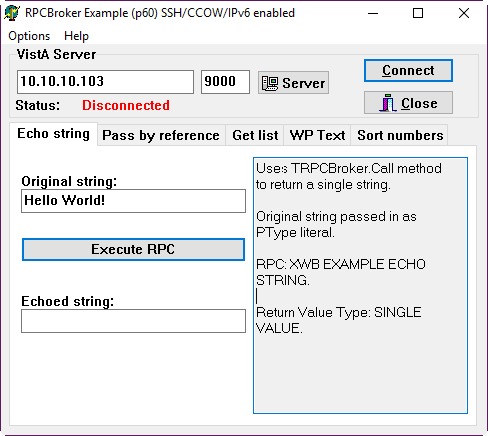
Once you click connect, you will see the sign-in dialog: That means that the broker is functional.
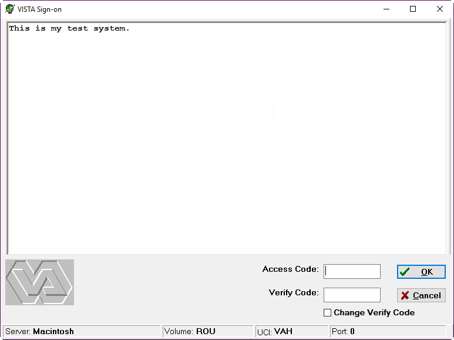
Note: Because of the infamous XUSRB1.m problem, you won't be able to log-on right now. But you should be able to using CPRS.
Set Yourself Up as the System Manager
This is a super user who will have elevated privileges. You can add other users such as Physicians, Pharmacists, etc. later. Set up the System Manager user with minimal information. We will add more information later. By convention, the super user has a DUZ of 1. So far we have been using the DUZ of .5. We have to use it one last time to make the system manager. Your access code is really your username. I set it up as SM1234, but you can put whatever you like. Go back into Fileman using S DUZ=.5 D Q^DI:
Select OPTION: 1 ENTER OR EDIT FILE ENTRIES
INPUT TO WHAT FILE: RPC BROKER PARAMETERS// 200 NEW PERSON
(2 entries)
EDIT WHICH FIELD: ALL// .01 NAME
THEN EDIT FIELD: ACCESS CODE Want to edit ACCESS CODE (Y/N)
THEN EDIT FIELD: <enter>
Select NEW PERSON NAME: `1 USER,ONE
NAME: USER,ONE// MANAGER,SYSTEM
Want to edit ACCESS CODE (Y/N): Y
Enter a new ACCESS CODE : ******
Please re-type the new code to show that I have it right: ******
OK, Access code has been changed!
The VERIFY CODE has been deleted as a security measure.
The user will have to enter a new one the next time they sign-on.
Select NEW PERSON NAME: <enter>
Next give your user privileges appropriate for a system manager. This brings us to VistA's security system.
VistA menu tree is built just like the Windows Registry: Folders (known as menus) which contain other folders or actual items which you can run. Each menu is like a door: it has a "key" which locks it; or it could be one of those sliding doors which doesn't have keys. A key to a door (ahem, menu) protects all the subsequent doors beyond the first door. If you lock the first door, you can keep the doors below it open. When we ran DO ^XUP, what we really did was that we went into the menu system.
Keys are also checked by runtime code in order to give privileges when performing certain operations. It's a very common practice in VistA for all users to have access to something, but only the holders of specific keys can perform certain actions. For example, all Lab users have "LRLAB"; but only those credentialed as Lab Technicians will have "LRVERIFY" to release the result.
Let's enlarge our analogy a bit: Users of the VistA system can be assigned a specific door to enter into: This is known as their PRIMARY MENU. A prevalent practice is to give everybody the PRIMARY MENU of XUCORE, which is analogous to a City Portal. Once you say who you are (ACCESS CODE) and your password (VERIFY CODE), you enter the City (XUCORE) and you can only enter the building for which you have the key.
What we do below is a couple of things: We give ourselves the Fileman Access Code (different from ACCESS CODE) of "@", which gives you the equivalent of root privileges in Fileman. Next, we give ourselves the keys XUMGR (let's you add users and manipulate tasks); XUPROG (let's you edit users [don't ask me why--I have no clue why they put that key there], and install Software); XUPROGMODE (let's you enter programmer mode); XMMGR (let's you manage mailman), XUSPF200 (let's you add users without requiring an SSN). By the way, privileged users can be given the ability to add new users and assign and take away keys using a mechanism called delegation. I won't cover that here.
>S DUZ=1
>S $P(^VA(200,DUZ,0),"^",4)="@"
>D ^XUP
Setting up programmer environment
Select TERMINAL TYPE NAME: C-VT320
Terminal Type set to: C-VT320
Select OPTION NAME: XUMAINT Menu Management
Select Menu Management Option: KEY Management
Select Key Management Option: ALLOcation of Security Keys
Allocate key: XUMGR
Another key: XUPROG
1 XUPROG
2 XUPROGMODE
CHOOSE 1-2: 1 XUPROG
Another key: XUPROGMODE
Another key: XMMGR
Another key: XUSPF200
Another key:
Holder of key: MANAGER,SYSTEM SM
Another holder:
You've selected the following keys:
XUPROG XUMGR XUPROGMODE XMMGR XUSPF200
You've selected the following holders:
MANAGER,SYSTEM
You are allocating keys. Do you wish to proceed? YES//
XUPROG being assigned to:
MANAGER,SYSTEM
XUMGR being assigned to:
MANAGER,SYSTEM
XUPROGMODE being assigned to:
MANAGER,SYSTEM
XMMGR being assigned to:
MANAGER,SYSTEM
XUSPF200 being assigned to:
MANAGER,SYSTEM
Select Key Management Option: <enter>
You are now ready to enter additional information for the system manager user like PRIMARY MENU, VERIFY CODE etc. You MUST enter a VERIFY CODE, otherwise, you won't be able to log in.
>D ^XUP
Setting up programmer environment
Terminal Type set to: C-VT320
Select OPTION NAME: XUSERED
1 XUSEREDIT Edit an Existing User
2 XUSEREDITSELF Edit User Characteristics
CHOOSE 1-2: 1 XUSEREDIT Edit an Existing User
Edit an Existing User
Select NEW PERSON NAME: MANAGER,SYSTEM SM
Before we go into details of the next screen, let's talk about the <PF1> key. Press <PF1> refers to notations for use of Vista on Terminals. For example, the original VT-320 keyboard had additional character sets and keys which include Find, Select, Insert, Remove, Previous Screen, Next Screen, an arrow cluster and F1 to F20. With Terminal Emulators, the Keys are "mapped", which means when you push a given key it acts as the key would in a terminal. For instance, F1, F2, F3 and F4 are equivalent to the PF1, PF2, PF3 and PF4 keys on the terminal keyboard and Page Up and Page Down on the computer keyboard correspond to Previous Screen and Next Screen. Also there is lots of information about terminals if you are interested at http://www.vt100.net. Also, the very beginning of this document tells you what are the recommended terminal emulators to use.
Now you will be presented with a screen with multiple options. You can navigate the screen with the TAB key. For navigation help, use your keyboard arrows to move down to the command line and hold down either the Num Lock key (which is mapped as PF1 of a VT-320 terminal by Caché) or F1 for other terminal emulations and hit "H" and then Enter for help. You can exit by typing "^" on the command line and the change you made will be saved. At a minimum, assign EVE as the PRIMARY MENU and enter IRM (it's the only choice) as SERVICE/SECTION. If you plan to use CPRS, enter OR CPRS GUI CHART as a SECONDARY MENU OPTION. Enter other data as you deem appropriate. If DISUSER or Termination Reason is set, use the '@' to delete both of them. To avoid problems down the road with a division that you didn't set-up, delete the DIVISION (tab to it, then enter, then @) that you see in the screen (unlike the screenshot below). No division means that the user will default to the main division, PALM DESERT HOSPITAL, which we already previously set-up.
Type "N"EXT PAGE at COMMAND: to go to page 2 to update the TIMED READ field and other fields you wish to update. For DEFAULT TIMED-READ (SECONDS): if you change it to 3600 you will be allow an hour before being automatically signed off. It makes it easier to work when you are learning and setting things up. And for God's sake, please make sure that your Preferred Editor is SCREEN EDITOR - VA FILEMAN, otherwise you can only edit a line of text at a time.
At this point, you can go back to Direct Mode. We will now run ^ZU, which is the VistA front door, or in the above analogy, the City Portal. At the VISTA prompt, Type D ^ZU.
At ACCESS CODE, type in the code you chose when setting up MANAGER, SYSTEM as a NEW PERSON. At VERIFY CODE, enter the verify code you chose for yourself earlier, and then you will be asked to change it. The introduction message "This is my test system." is what we put in a while ago in the Kernel Set-Up section.
>D ^ZU
This is my test system.
Volume set: ROU:Macintosh UCI: VAH Device: /dev/ttys007
ACCESS CODE: ******
VERIFY CODE: *********
Device: /dev/ttys007
Good evening MANAGER,SYSTEM
You last signed on today at 22:20
There were 2 unsuccessful attempts since you last signed on.
Core Applications ...
Device Management ...
Menu Management ...
Programmer Options ...
Operations Management ...
Spool Management ...
Information Security Officer Menu ...
Taskman Management ...
User Management ...
Application Utilities ...
Capacity Planning ...
HL7 Main Menu ...
Select Systems Manager Menu Option:
At Select Systems Manager Menu Option: Type OPER, (short for operations management) and hit enter. You can see all of the choices available to you if you type ??.
At Select Operations Management Option: Type KER short for Kernel Management Menu and hit enter. At Select Kernel Management Menu Option: Type ENT, short for Enter/Edit Kernel Site Parameters. Hit enter.
You will be presented with a similar screen as in editing the SYSTEM MANAGER characteristics. You can navigate the screen with the TAB key. For DEFAULT TIMED-READ (SECONDS): change it to 3600 to allow an hour before being automatically signed off, or whatever you choose.
I strongly recommend setting DEFAULT MULTIPLE SIGN-ON to YES.
Now you can exit this screen. Press <PF1>/<F1>-S and <PF1>/<F1>-E; and then press enter 4 times. You will be dumped back to your operating system. (Exit from the front door ^ZU dumps you all the way out from VistA. Type mumps -dir on GT.M or csession <INSTANCE> -U <NAMESPACE> to get back into direct mode for the next step.
Mail a Message
Now send a message using Postmaster to your DUZ number. From Direct Mode, type S DUZ=.5 D ^XUP. You will get the response SETTING UP PROGRAMMER ENVIRONMENT then TERMINAL TYPE SET TO: (your default) and Select OPTION NAME:. You will need to respond: XMUSER. At Select Mailman Menu Option: type S (for send). At Subject: enter your subject, such as Test, and then hit enter. You will then be prompted You may enter the text of the message and you will be offered the line number 1> where you can type your message, such as the infamous Hello world. Next will be line 2> and if you are done, just hit enter and at EDIT Option: you can do the same. At Send mail to: POSTMASTER// enter the initials you used for your DUZ which were probably DBA for System Manager. You will then be told when Mailman was last used, which is probably NEVER. Hit enter at And Send to: and you should receive the message Select Message option: Transmit now// at which you hit enter and will hopefully receive the message Sending [1] Sent. Type ^ to exit.
Now see if you received it. Log on using D ^ZU. At the Systems Manager prompt, type MAILMAN MENU. If you don't see the NEW messages option, it means that you need to navigate to the submenu, and type "MAILMAN" again. Then at the Select Mailman Menu Option: type NEW Messages and Responses. Read the mail (figure out the steps on your own).
Add CPRS User
The next step is to create a user that can sign on to the CPRS GUI. The things to make sure that this new user has are
A Secondary menu option of "OR CPRS GUI CHART"
CPRS Tab Access
An ACCESS CODE
A VERIFY CODE
Service/Section (required for any user)
The menu option ensures that the user has the proper permissions to access CPRS after signing in with their ACCESS and VERIFY codes. The Tab access can limit the amount of things a user can access once they have signed in.
The adding of the user is done through the User Management menu in the menu system, which will ask for information in a series of prompts then will open a Screenman form to complete the task.
The following steps will add a generic CPRS,USER person who will be able to sign into CPRS.
From the previous mail message example, exiting out of mailman and pressing enter a couple of times will get you back to the System Manager Menu EVE. If you signed out, go back through the front door using mumps -r ZU (GTM/YDB) or csession <instance> -U <namespace> ZU.
Core Applications ...
Device Management ...
Menu Management ...
Programmer Options ...
Operations Management ...
Spool Management ...
Information Security Officer Menu ...
Taskman Management ...
User Management ...
Application Utilities ...
Capacity Planning ...
HL7 Main Menu ...
Select Systems Manager Menu Option: User Management
Add a New User to the System
Grant Access by Profile
Edit an Existing User
Deactivate a User
Reactivate a User
List users
User Inquiry
Switch Identities
File Access Security ...
\**> Out of order: ACCESS DISABLED
Clear Electronic signature code
Electronic Signature Block Edit
List Inactive Person Class Users
Manage User File ...
OAA Trainee Registration Menu ...
Person Class Edit
Reprint Access agreement letter
Select User Management Option: Add a New User to the System
Enter NEW PERSON's name (Family,Given Middle Suffix): CPRS,USER
Are you adding 'CPRS,USER' as a new NEW PERSON (the 56TH)? No// Y (Yes)
Checking SOUNDEX for matches.
No matches found.
Now for the Identifiers.
INITIAL: UC
SSN: <enter>
SEX: F FEMALE
NPI: <enter>
Once in the Screenman form, you will need to set the necessary information mentioned above. Four pieces of information are able to be set on the first page of the Screenman form. The arrows are for emphasis to highlight where information needs to be entered and will not show up in the terminal window.
To add an access or verify codes, you need to first answer Y to the Want to edit ... questions, it will then prompt you to change the codes. Remember to give the user both an access and veify codes; otherwise, they won't be able to log-in.
Fill in as follows:
PRIMARY MENU OPTION = XUCORE
SECONDARY MENU OPTIONS = OR CPRS GUI CHART
ACCESS CODE = CPRS1234
VERIFY CODE = USR.1234
SERVICE/SECTION = IRM
Edit an Existing User
NAME: CPRS,USER Page 1 of 5
_______________________________________________________________________________
NAME... CPRS,USER INITIAL: UC
TITLE: NICK NAME:
SSN: DOB:
DEGREE: MAIL CODE:
DISUSER: TERMINATION DATE:
Termination Reason:
PRIMARY MENU OPTION: <---
Select SECONDARY MENU OPTIONS: <---
Want to edit ACCESS CODE (Y/N): <--- FILE MANAGER ACCESS CODE:
Want to edit VERIFY CODE (Y/N): <---
Select DIVISION:
---> SERVICE/SECTION:
_______________________________________________________________________________
Exit Save Next Page Refresh
Enter a command or '^' followed by a caption to jump to a specific field.
COMMAND: Press H for help Insert
To change to other pages, press the down arrow key or <TAB> until the cursor reaches the COMMAND box. Then type N or Next Page and press <enter> to display the next page.
There is nothing that needs to be set on the second page. On the third page, you MUST put in a provider person class (Physician, Nurse, etc; otherwise you won't be able to be a provider on encounters). Navigate to Person Class and then type "PHYSICIAN", press enter twice, and then choose #1. Press enter once, say yes, and then enter. At this point, you should see the entry; and the effective date should be today.
Edit an Existing User
NAME: CPRS,USER Page 3 of 5
_______________________________________________________________________________
PROHIBITED TIMES FOR SIGN-ON:
PHONE: OFFICE PHONE:
COMMERCIAL PHONE: FAX NUMBER:
VOICE PAGER: DIGITAL PAGER:
LANGUAGE:
Person Class Effective Expired
Physician Assistants and Advanced Practi DEC 4,2016
_______________________________________________________________________________
Exit Save Next Page Previous Page Refresh Quit
Enter a COMMAND, or "^" followed by the CAPTION of a FIELD to jump to.
COMMAND: e Press H for help Insert
On the fourth page, CPRS Tab Access is set. Navigate first to "RESTRICT PATIENT SELECTION", set that to "NO", and then navigate the cursor to the location under the Name header and enter COR, which stands for Core Tab Access, and enter an effective date of yesterday, T-1 is the notation to use.
Edit an Existing User
NAME: CPRS,USER Page 4 of 5
_______________________________________________________________________________
RESTRICT PATIENT SELECTION:-> OE/RR LIST:
CPRS TAB ACCESS:
Name Description Effective Date Expiration Date
->
_______________________________________________________________________________
COMMAND: Press H for help
Once that is done, save and exit the Screenman form via the COMMAND box and then answer the final questions regarding access letters, security keys and mail groups. For security keys, there are two we need to add: ORES and PROVIDER.
Exit Save Next Page Refresh
Enter a command or '^' followed by a caption to jump to a specific field.
COMMAND: E Press H for help Insert
Print User Account Access Letter? NO
Do you wish to allocate security keys? NO// YES
Allocate key: PROVIDER
1 PROVIDER
2 PROVIDER ID EDIT IB PROVIDER EDIT
CHOOSE 1-2: 1 PROVIDER
Another key: ORES
Another key: <enter>
Another holder: <enter>
You've selected the following keys:
PROVIDER ORES
You've selected the following holders:
CPRS,USER
You are allocating keys. Do you wish to proceed? YES// <enter>
PROVIDER being assigned to:
CPRS,USER
ORES being assigned to:
CPRS,USER
Do you wish to add this user to mail groups? NO// NO
...
Select User Management Option: ^<enter>
>
At this point, CPRS can successfully connect to the local VistA instance and the CPRS,USER will be able to sign on and interact with the GUI.
Downloading CPRS and Running It
The next part is laborious and tedious: finding the correct vesion of CPRS to run on your FOIA instance.
NB: If you have been following on a Linux or Mac machine so far, you need to switch to Windows or use Wine 1.8 or higher to run CPRS. Earlier versions of Wine had an unimplemented function in comctl32.dll that prevented CPRS from running.
The first thing is that you need to go into Fileman, and find out what the version of CPRS you need to use is:
>S DUZ=1 D Q^DI
VA Fileman 22.2
Select OPTION: INQUIRE TO FILE ENTRIES
Output from what File: 19 OPTION (10351 entries)
Select OPTION NAME: OR CPRS GUI CHART CPRSChart version 1.0.30.75
Another one: ^
Okay. So we need 1.0.30.75. So we navigate here: http://foia-vista.osehra.org/Patches_By_Application/CPRS%20GUI%20FILES/, and from there, try to guess which version we need. From my version string, it looks like we need version 30. There are three version 30's; so I guess I should choose the latest one.
At this point, we need to look for a .zip file. Looking through the list, I see
OR_30_423_scrubbed.zip
OR_30_423_SRC_scrubbed.zip
The one most likely to contain the CPRS exe is OR_30_423_scrubbed.zip; SRC_scrubbed.zip is the CPRS source code, which also may contain a compiled version.
Please please note that this is what I see when I write this at the end of 2016; what you see in the future will certainly be different.
So I download OR_30_423_scrubbed.zip, and open it. There is a CPRSChart.exe in that one. But what version?
We can find that out by right clicking on the exe, choosing properties, and then choosing the 4th tab. Over there, you will see the version number. Make sure that that's the right version number compared with what you have.
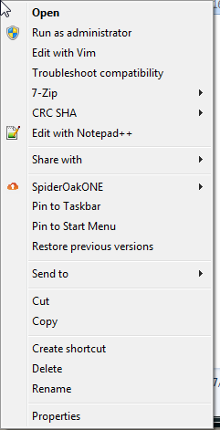
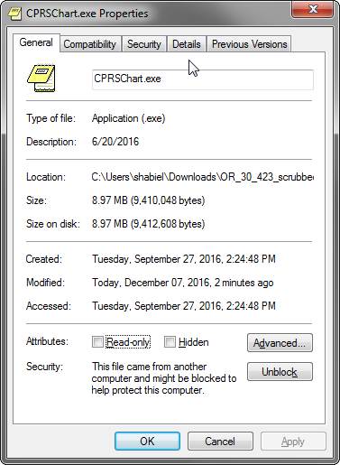
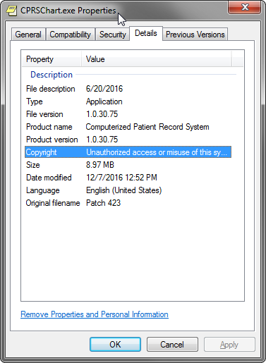
If you have the right version, we can try running it, but you will get an error right away saying that 'borlndmm.dll' is needed.
You can find 'borlndmm.dll' in the source code download referenced above (the zip file that contains SRC in the name) in the CPRS-Chart folder. While I am updating these instructions, I found that the 'borlndmm.dll' was actually with CPRSChart.exe. Copy that file to the folder where the CPRSChart.exe is located at.
Now, try to run CPRS again. You will get this splash screen:
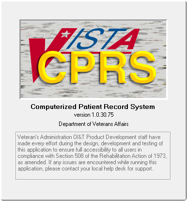
But then, you may see this:
What you have to do is to invoke CPRS with 3 parameters in order to tell it where and how to connect.
s=<ip address or DNS server name>
p=<port>
ccow=disable
The way to do that on Microsoft Windows for end users is to create a shortcut and modify the target. Therefore, here's what you need to do: right click on CPRS, and choose "Create Shortcut". You will see a shortcut icon right in the same window. Something that looks like this:
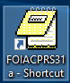
Right-click on that, and then click (i.e. left click) on properties. You will see the following:
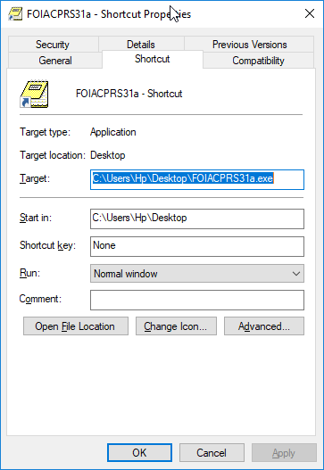
In the target field, append the s, p, and ccow as described above. Here is mine:
Click OK. You will see that CPRS connects, and display the access and verify screen:
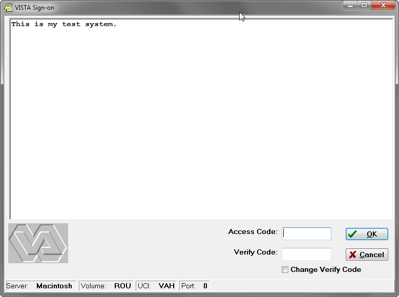
Now, put in the access and verify codes. If you followed along, this would be CPRS1234 and USR.1234.
Once you sign-in, since you are signing in for the first time, you will be asked to change your verify code:
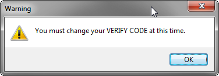
Go ahead and change it (no screen shot shown) and then click OK. It will confirm that it changed, and then you will see the patient selection screen.
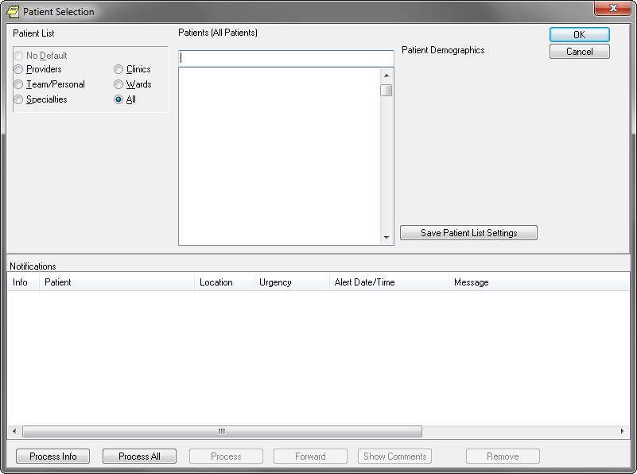
You should be happy when you reach this point; except that a medical records system is useless without patients.
Registering your First Patient
Let's register a patient. Login using the CPRS User we just set-up.
NB: On GT.M/YottaDB, patient registration will crash, as it tries to use Cache Specific Code. To fix that, we need to edit some routines. To edit a routine in GT.M/YDB, it's easiest to just edit it on the shell. You will recall that we installed VistA in /var/db/<name>. And we copied all routines into the r directory. edit the code, use an editor (a simple editor to use is nano) and edit the file. For example, to edit MPIFXMLP, enter nano /var/db/<name>/r/MPIFXMLP.m.
If you want to register the patient on GT.M/YottaDB, edit routine MPIFXMLP, changing the label PATIENT to ZPATIENT
In routine DGRPD, in line 34 remove the errant space:
N DGSKIP S DGSKIP=$S(DGFORGN:"!,?42,""From/To: """,1:"?42, ""From/To: """)
to
N DGSKIP S DGSKIP=$S(DGFORGN:"!,?42,""From/To: """,1:"?42,""From/To: """)
Now we can register the patient.
>$ mumps -r ^ZU
This is my test system.
Volume set: ROU:Macintosh UCI: VAH Device: /dev/ttys001
ACCESS CODE: ***************** (Access Code;Verify Code)
Good afternoon CPRS,USER
You last signed on today at 16:36
DENT Dental ...
EN Engineering Main Menu ...
FEE Fee Basis Main Menu ...
FH Dietetic Administration ...
GECO Miscellaneous Code Sheet Manager Menu ...
GECS Generic Code Sheet Menu ...
GMRA Adverse Reaction Tracking ...
IB Integrated Billing Master Menu ...
MCAR Medicine Menu ...
NU Nursing System Manager's Menu ...
PDX Patient Data Exchange ...
PROS Prosthetic Official's Menu ...
PRPF Patient Funds (INTEGRATED) System ...
RA Rad/Nuc Med Total System Menu ...
ROES Remote Order/Entry System ASPS Menu ...
RT Record Tracking Total System Menu ...
SR Surgery Menu ...
SW Information Management Systems (SWIMS) ...
TIU TIU Maintenance Menu ...
VMAS Volunteer Timekeeping Activity ...
VOL Volunteer Master Menu ...
YSM MHS Manager ...
Press 'RETURN' to continue, '^' to stop: <enter>
YSU Mental Health ...
ADT Manager Menu ...
CPRS Manager Menu ...
CPRS Menu
Employee Menu ...
Finance AR Manager Menu ...
Health Summary Coordinator's Menu ...
Health Summary Enhanced Menu ...
Health Summary Menu ...
IV Menu ...
Library Management ...
National Drug File Menu ...
Outpatient Pharmacy Manager ...
Payroll Main Menu ...
Payroll Supervisor Menu ...
Scheduling Manager's Menu ...
Serials Control ...
Unit Dose Medications ...
Select Core Applications Option: ADT Manager Menu
CPT codes and descriptions are copyright 2016 by the American Medical
Association (AMA). All Rights Reserved. CPT is a registered trademark of the
American Medical Association.
Press any key to continue<enter>
ADT Outputs Menu ...
Bed Control Menu ...
Beneficiary Travel Menu ...
Contract Nursing Home RUG Menu ...
Eligibility Inquiry for Patient Billing
MAS Code Sheet Manager Menu ...
Patient Inquiry
PTF Menu ...
Registration Menu ...
RUG-II Menu ...
Select ADT Manager Menu Option: Registration Menu
DA Disposition an Application
EN Patient Enrollment
PHH Purple Heart Request History
PHS Purple Heart Status Report
Add/Edit/Delete Catastrophic Disability
Collateral Patient Register
Combat Vet Status Report
Delete a Registration
Disposition Log Edit
Edit Inconsistent Data for a Patient
Eligibility Inquiry for Patient Billing
Eligibility Verification
Load/Edit Patient Data
Means Test User Menu ...
Patient Inquiry
Preregistration Menu ...
Print Patient Wristband
Pseudo SSN Report (Patient)
Register a Patient
Report - All Address Change with Rx
Report - All Address Changes
Report - All Patients flagged with a Bad Address
Press 'RETURN' to continue, '^' to stop:<enter>
Unsupported CV End Dates Report
View Patient Address
View Registration Data
Select Registration Menu Option: Register a Patient
Select PATIENT NAME: MOUSE,MINNIE
ARE YOU ADDING 'MOUSE,MINNIE' AS A NEW PATIENT (THE 2ND)? No// Y (Yes)
PATIENT SEX: F FEMALE
PATIENT DATE OF BIRTH: 11/11/47 (NOV 11, 1947)
PATIENT SOCIAL SECURITY NUMBER: P 505111148P
PATIENT PSEUDO SSN REASON: N NO SSN ASSIGNED
PATIENT TYPE: N
1 NEWBORN OF VETERAN
2 NON-VETERAN (OTHER)
3 NSC VETERAN
CHOOSE 1-3: 2 NON-VETERAN (OTHER)
PATIENT VETERAN (Y/N)?: N NO
PATIENT SERVICE CONNECTED?: N NO
PATIENT MULTIPLE BIRTH INDICATOR:<enter>
...searching for potential duplicates..
The following patients have been identified as potential duplicates:
MOUSE,MICKEY 11-11-47 505111147P **Pseudo SSN** NO NON-VETE
RAN (OTHER)
Do you still want to add 'MOUSE,MINNIE' as a new patient? No// Y (Yes)
...adding new patient...new patient added
Patient name components--
FAMILY (LAST) NAME: MOUSE//<enter>
GIVEN (FIRST) NAME: MINNIE//<enter>
MIDDLE NAME:<enter>
PREFIX:<enter>
SUFFIX:<enter>
DEGREE:<enter>
Press ENTER to continue<enter>
Please verify or update the following information:<enter>
MOTHER'S MAIDEN NAME:<enter>
PLACE OF BIRTH [CITY]:<enter>
PLACE OF BIRTH [STATE]:<enter>
Select ALIAS:<enter>
Attempting to connect to the Master Patient Index in Austin...
If no SSN or inexact DOB or common name, this request
may take some time, please be patient...
Could not connect to MPI or Timed Out, assigning local ICN (if not already assig
ned)...<enter>
MOUSE,MINNIE 505-11-1148P NOV 11,1947
=============================================================================
Address: STREET ADDRESS UNKNOWN Temporary: NO TEMPORARY ADDRESS
UNK. CITY/STATE
County: UNSPECIFIED From/To: NOT APPLICABLE
Phone: UNSPECIFIED Phone: NOT APPLICABLE
Office: UNSPECIFIED
Cell: UNSPECIFIED
E-mail: UNSPECIFIED
Bad Addr:
Confidential Address: Confidential Address Categories:
NO CONFIDENTIAL ADDRESS
From/To: NOT APPLICABLE
POS: UNSPECIFIED Claim #: UNSPECIFIED
Relig: UNSPECIFIED Sex: FEMALE
Race: UNANSWERED Ethnicity: UNANSWERED
Type <Enter> to continue or '^' to exit: ^
Now, if you run CPRS again, you will see a patient, and you can select them:
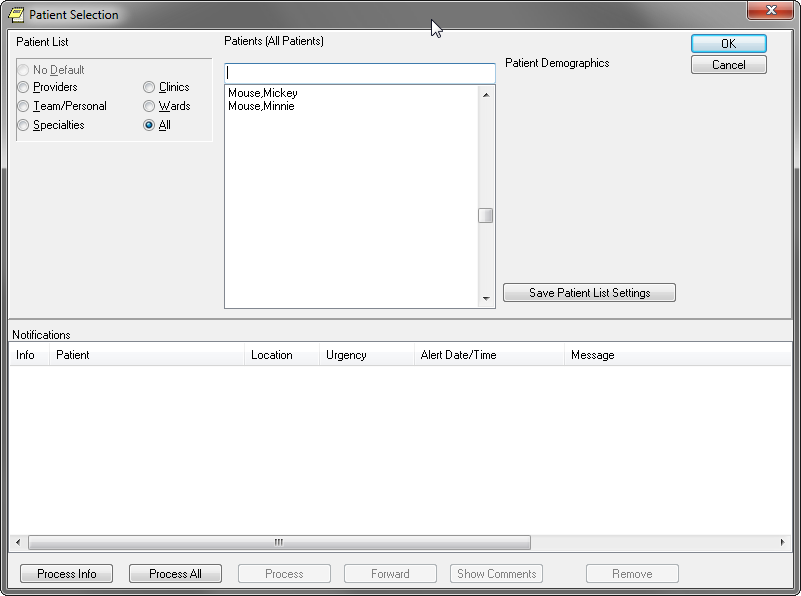
and then you will see the cover sheet:
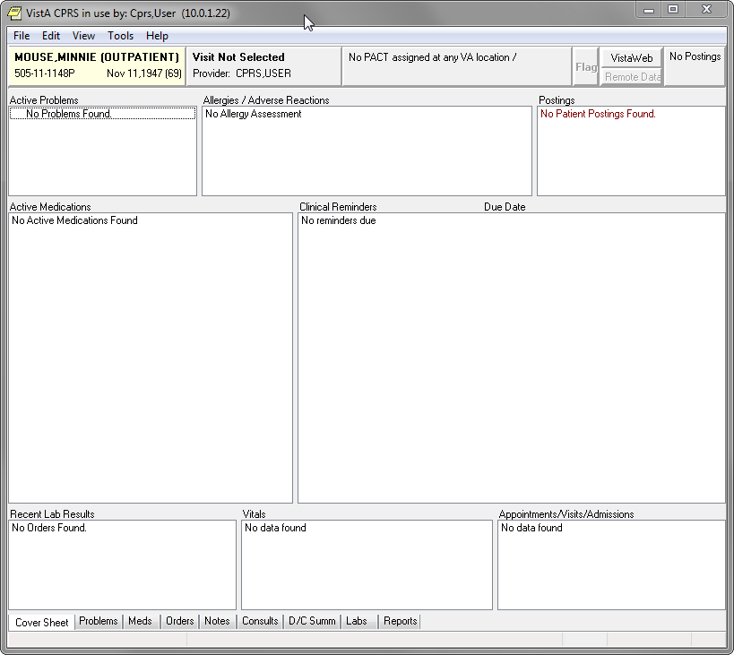
There is little you can do because most of VistA is not set-up. But you can now get an idea of what CPRS is like. The most important step is to at least create one clinic. You can do that in the SDBUILD menu. Doing this will unlock most of CPRS for you.